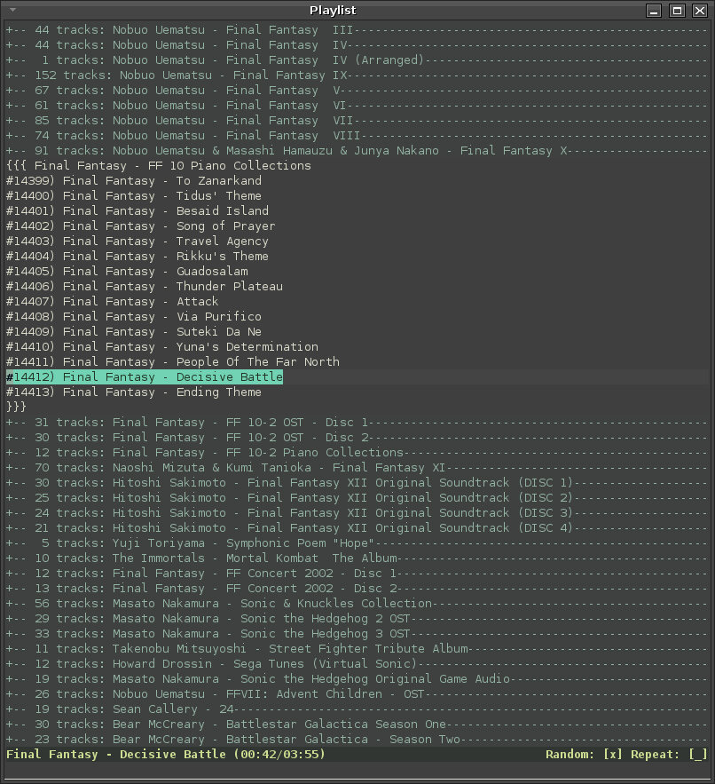

$ tar xzf vimmpc-(revision).tar.gz $ cd ~/.vim/plugin $ ln -s /path/to/vimmpc/vimmpc.vim $ ln -s /path/to/vimmpc/vimmpc.py
vimmpc-20070410.tar.gz:: A tarball distribution of the latest version of vimmpc.
The following dependencies are required to use vimmpc:
Vim 7.0+ (http://www.vim.org/)
Python 2.4+ (http://www.python.org/)
mpdclient2.py (http://svn.navi.cx/misc/trunk/python/bemused/mpdclient2.py)
$ tar xzf vimmpc-(revision).tar.gz $ cd ~/.vim/plugin $ ln -s /path/to/vimmpc/vimmpc.vim $ ln -s /path/to/vimmpc/vimmpc.py
And finally:
$ vim -c MPC
To complete the installation and launch Vim with MPC loaded.
|
Note
|
Vim can be loaded as normal and vimmpc activated by use of :MPC |
Here is a screenshot of vimmpc in action:

The development version can be checked out directly from the subversion repository http://svn.brokentrain.net/vimmpc/trunk or viewed directly online at http://svn.brokentrain.net/vimmpc/trunk.
Please direct any questions, comments, patches, bugs to: gavin@brokentrain.net
Copyright © 2006-2007 Gavin Gilmour. Free use of this software is granted under the terms of the GNU General Public License (GPL).